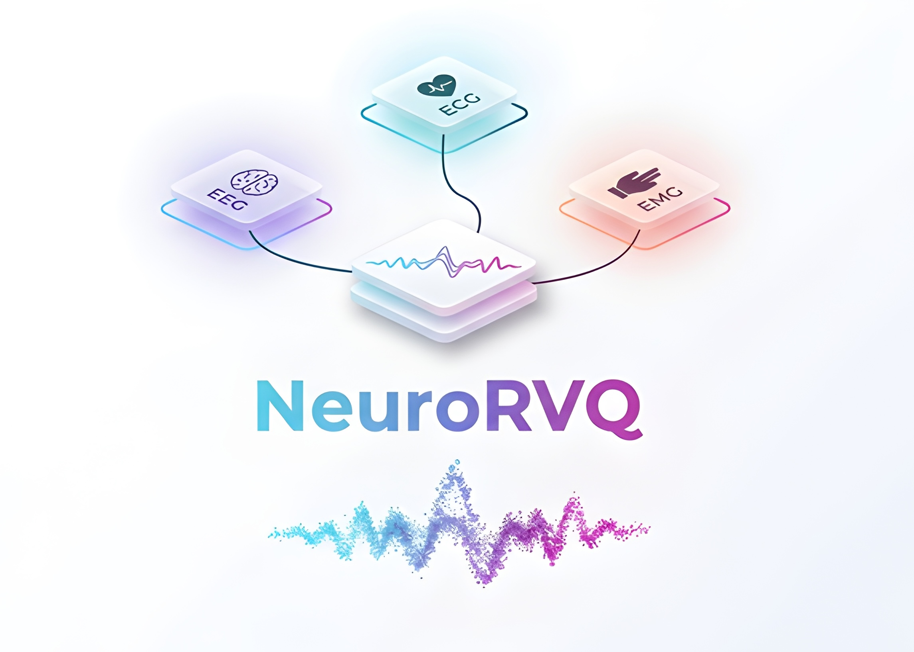
Biosignals such as electroencephalography (EEG), electrocardiography (ECG), and electromyography (EMG) encode physiological activity across multiple temporal and spectral scales, yielding representations that are rich but challenging for machine learning. Foundation models trained to predict masked signal tokens have shown promise in learning generalizable biosignal representations, yet their performance depends on the tokenizer's ability to preserve high-frequency dynamics and reconstruct signals with high fidelity. We introduce NeuroRVQ, a modality-adaptive biosignal tokenizer family designed for high-fidelity signal reconstruction. To capture the full frequency spectrum, NeuroRVQ decomposes biosignals into frequency-specific representations via multi-scale temporal convolutions, each encoded into hierarchical RVQ codebooks to preserve high-frequency detail, combined with a novel phase-aware training loss that respects the circular topology of Fourier phase. By tuning the temporal resolution, number and size of temporal kernels and RVQ depth, this design adapts to the spectro-temporal characteristics of each biosignal modality. To validate that tokenizer quality drives downstream performance, we train a simple masked-token foundation model for each modality (NeuroRVQ-FM) using the corresponding NeuroRVQ tokenizer. The NeuroRVQ-FM family achieves competitive or superior downstream performance compared to existing modality-specific foundation models, demonstrating that high-fidelity tokenization is a critical factor for effective biosignal modeling.
A modality-adaptive multiscale tokenizer architecture that decomposes biosignals into frequency-specific representations via temporal convolutions with varying kernel sizes and encodes each frequency scale into hierarchical Residual Vector Quantization (RVQ) codebooks,enabling high-fidelity signal reconstruction across EEG, ECG and EMG. By tuning the temporal resolution, number and size of temporal kernels, and RVQ depth, this architecture adapts to the spectro-temporal characteristics of each biosignal modality.
A phase-aware training loss that reconstructs the Fourier spectrum through three complementary components: a log-amplitude loss for Fourier amplitude to emphasize high-frequency content, a temporal-domain regularization loss and a novel phase loss that respects the circular topology of phase angles by leveraging cosine similarity for directional alignment
A simple masked-token foundation model (NeuroRVQ-FM) for each modality that leverages the corresponding NeuroRVQ tokenizer during pre-training and achieves competitive or superior downstream performance compared to existing modality-specific foundation models, demonstrating that high-fidelity tokenization (rather than model scale or architectural complexity) is a critical ingredient for effective biosignal modeling.
The NeuroRVQ Tokenizer converts raw biosignals into compact and informative neural tokens. The input multi-variate time series is segmented into patches, encoded by the multi-scale temporal encoder at multiple resolutions, combined via a transformer encoder, then discretized into neural tokens through per-scale RVQ codebooks. Tokens are decoded to reconstruct the input patches using the Fourier spectrum.
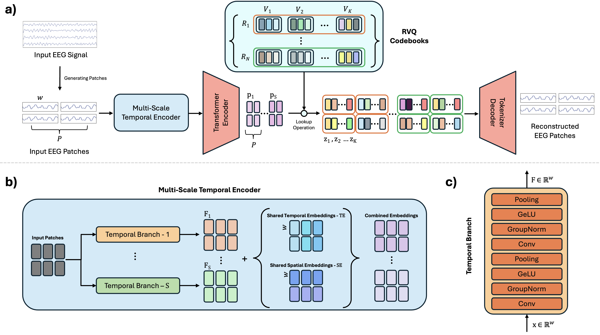
Temporal convolutions with varying kernel sizes capture features across multiple frequency resolutions.
Transformer layers model long-range spatio-temporal dependencies across channels and patches, producing rich contextualized embeddings.
Per-scale Residual Vector Quantization codebooks discretize the multi-scale embeddings into sequences of neural tokens optimized for reconstruction fidelity.
A decoder reconstructs input patches using the Fourier spectrum, supervised by a phase-aware training loss that jointly captures amplitude and phase information.
The NeuroRVQ Foundation Model operates on the tokenized representation, using masked-token prediction with symmetric masking. By working at the token level, it captures long-range dependencies, learns abstract neural dynamics, and enables efficient pre-training across diverse biosignal datasets. The learned codebooks serve as prediction targets during pre-training, and the resulting representations transfer effectively to a range of downstream BCI tasks.
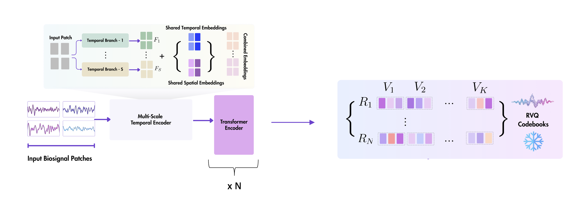
To determine the optimal tokenizer configuration for each modality, we conduct a systematic scaling analysis over the number of temporal branches and RVQ codebooks per branch. Two consistent patterns emerge across all modalities: deeper residual quantization yields large reductions in reconstruction error, and adding temporal branches provides complementary gains by decomposing the signal into frequency-specific representations that are each easier to quantize. The optimal balance between these two mechanisms is modality-dependent.
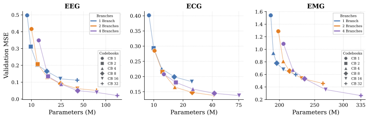
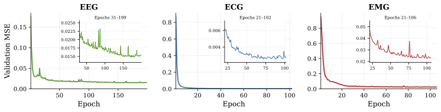
Architecture alone does not account for NeuroRVQ's reconstruction gains — the training loss is equally critical. The tokenizer is trained end-to-end with a composite objective operating in the Fourier domain that combines three complementary components: a log-amplitude loss that compresses dynamic range and emphasizes high-frequency content, a novel phase loss based on cosine similarity that respects the circular topology of Fourier phase angles, and a temporal-domain regularization term.
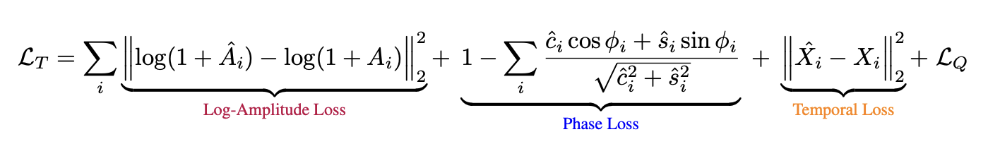
Starting from a simple baseline (single branch, single codebook, naive MSE on phase and amplitude), each NeuroRVQ component is added incrementally. The phase-aware loss delivers the largest single improvement, and the full combination achieves up to a 43× reduction in reconstruction error.
| Configuration | EEG | ECG | EMG |
|---|---|---|---|
| 1-Branch, 1CB, MSE Phase + MSE A | 1.509 | 1.956 | 1.996 |
| 4-Branch, 8CB, MSE Phase + MSE A | 0.946 | 1.417 | 1.651 |
| 4-Branch, 8CB, MSE Phase + log(A) + Temporal | 0.603 | 0.843 | 1.000 |
| 4-Branch, 8CB, Phase Loss + MSE A | 0.167 | 0.287 | 0.903 |
| 4-Branch, 8CB, Phase Loss + log(A) + Temporal | 0.035 | 0.115 | 0.447 |
Validation MSE averaged over the last 10 training epochs. The full NeuroRVQ configuration (row 5) achieves a 43× reduction for EEG, 17× for ECG and 4.5× for EMG relative to the baseline.
Per-band analysis of reconstructed EEG signals. NeuroRVQ faithfully preserves waveform morphology across all frequency bands, while existing tokenizers lose high-frequency detail.
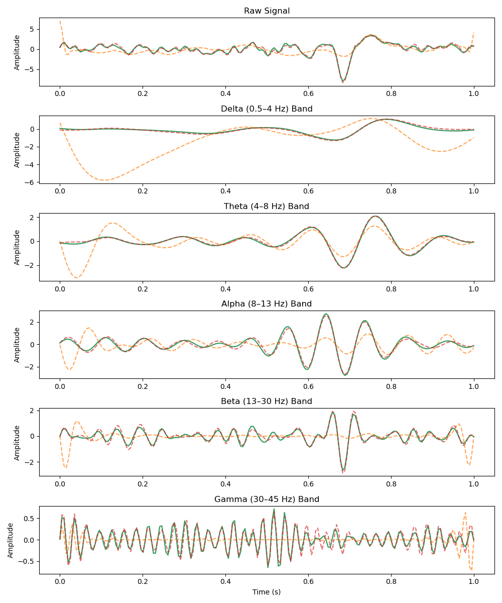
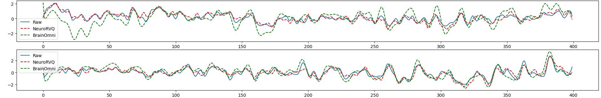
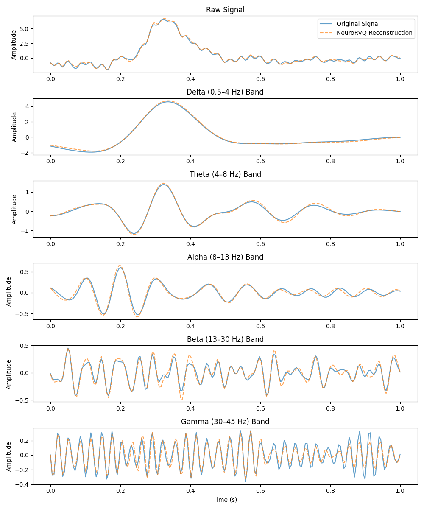
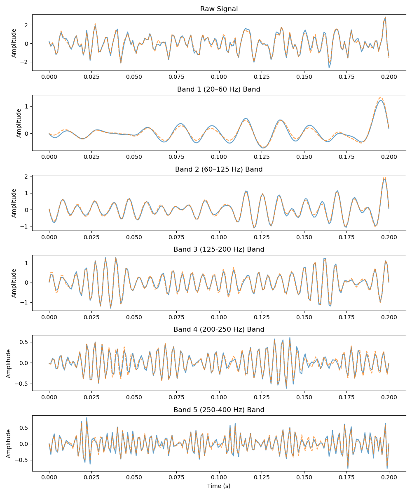
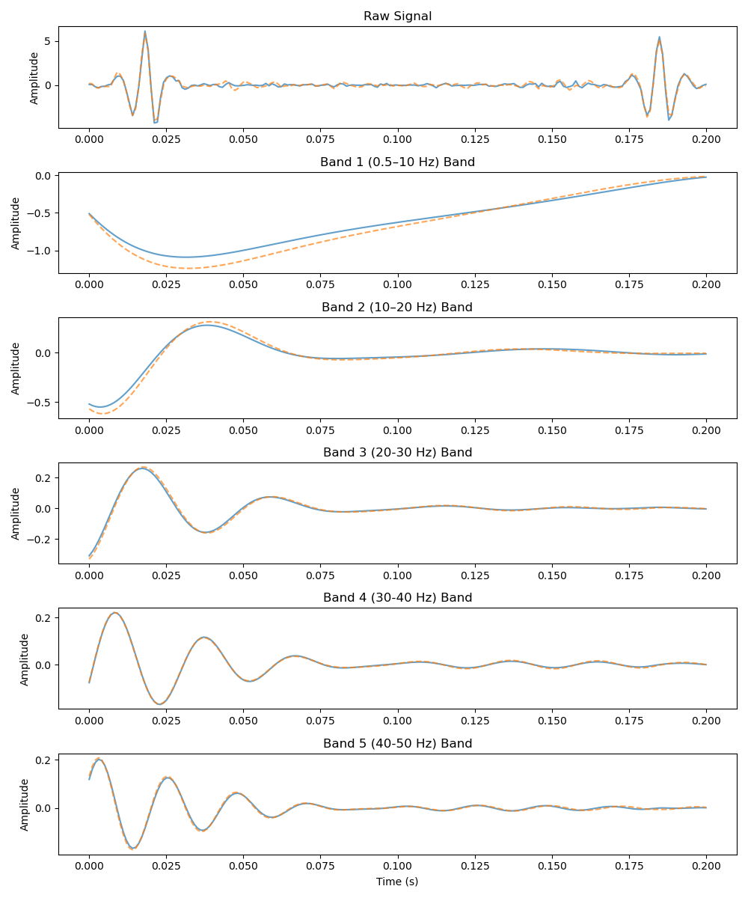
Sample reconstructed signals from the validation set using the NeuroRVQ tokenizer across all three modalities. Blue lines denote the input signal and orange the reconstructed signal.
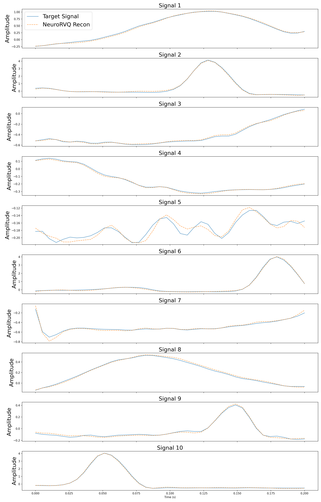
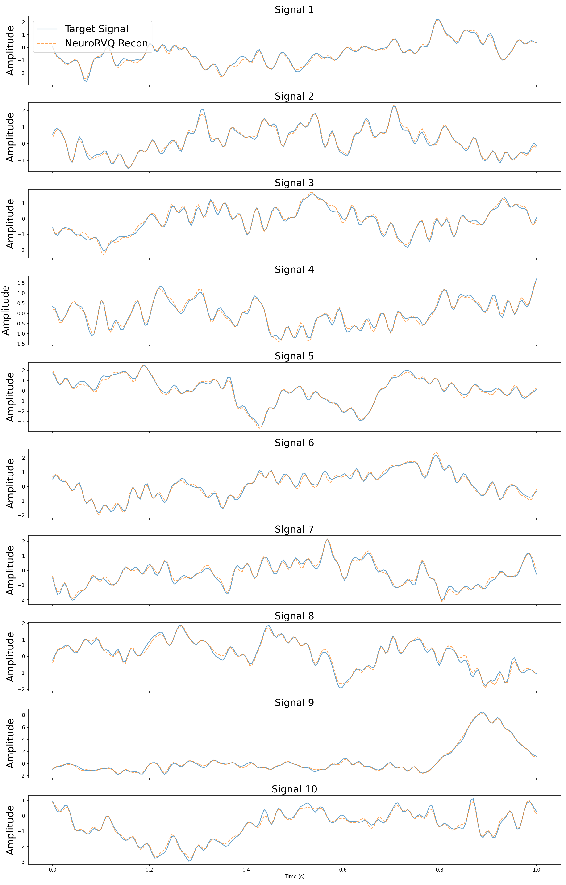
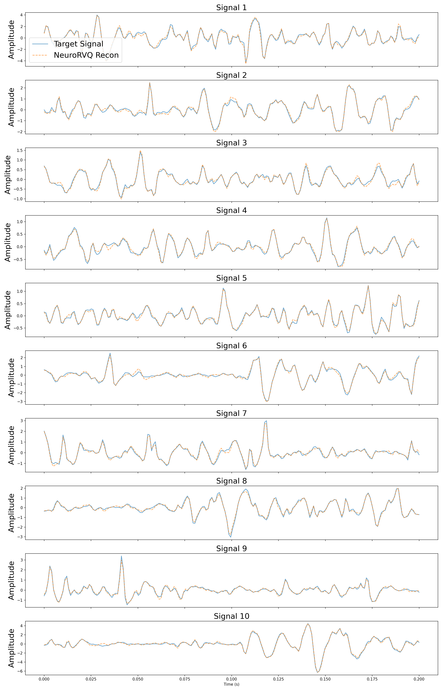
| Model Version | Backbone | Modality | Status |
|---|---|---|---|
| NeuroRVQ-EEG-tokenizer | 76M | EEG | ✅ Released |
| NeuroRVQ-EEG-FM | 5.9M | EEG | ✅ Released |
| NeuroRVQ-ECG-tokenizer | 76M | ECG | ✅ Released |
| NeuroRVQ-ECG-FM | 264K | ECG | ✅ Released |
| NeuroRVQ-EMG-tokenizer | 144M | EMG | ✅ Released |
| NeuroRVQ-EMG-FM | 5.9M | EMG | ✅ Released |
NeuroRVQ achieves state-of-the-art performance on five BCI downstream tasks, outperforming the next-best model by over 4 percentage points in mean balanced accuracy. Results are based on a rigorous subject-independent cross-validation benchmark.
| Model | Motor | ERP | Memory | Sleep | Eyes | Mean | Size |
|---|---|---|---|---|---|---|---|
| NeuroGPT | 0.682 | 0.757 | 0.597 | 0.674 | 0.827 | 0.707 | 79.5M |
| CBraMod | 0.614 | 0.777 | 0.574 | 0.635 | 0.839 | 0.688 | 4.9M |
| BIOT | 0.443 | 0.500 | 0.510 | — | 0.763 | — | 3.2M |
| MIRepNet | 0.689 | — | — | — | — | — | — |
| BrainOmni | 0.585 | 0.723 | 0.518 | — | 0.852 | — | — |
| LaBraM | 0.630 | 0.822 | 0.526 | 0.652 | 0.799 | 0.686 | 5.8M |
| EEGPT | 0.313 | 0.668 | 0.520 | 0.634 | 0.797 | 0.587 | 25.7M |
| NeuroRVQ-EEG | 0.700 | 0.876 | 0.574 | 0.728 | 0.869 | 0.749 | 5.9M |
Benchmark from Assessing the Capabilities of Large Brainwave Foundation Models (IEEE MLSP 2025).
NeuroRVQ-ECG achieves high balanced accuracy on both PTB-XL settings, doubling the balanced accuracy of HuBERT-ECG on the fine-grained 43-class task and substantially outperforming all baselines where class imbalance is most severe.
| Model | 5-class PTB-XL | 43-class PTB-XL | ||
|---|---|---|---|---|
| Accuracy | BAcc | Accuracy | BAcc | |
| HuBERT-ECG | 72.60 | 60.23 | 62.49 | 20.71 |
| ECGFounder | 76.55 | 65.39 | 65.51 | 28.96 |
| NeuroRVQ-ECG | 70.19 | 64.50 | 79.17 | 58.33 |
NeuroRVQ-EMG outperforms PhysioWave and TinyMyo across all four classification tasks by a wide margin, demonstrating that high-fidelity tokenization transfers effectively to muscular activity decoding.
| Model | Discrete Gestures | EPN-612 | NinaPro DB5 | UCI-EMG | ||||
|---|---|---|---|---|---|---|---|---|
| BAcc ↑ | CLER ↓ | Acc | F1 | Acc | F1 | Acc | F1 | |
| PhysioWave | 54.70 | 64.20 | 90.30 | 90.35 | 24.91 | 22.95 | 56.52 | 55.76 |
| TinyMyo | 39.70 | 64.20 | 84.68 | 84.68 | 25.26 | 23.29 | 85.99 | 85.66 |
| NeuroRVQ-EMG | 70.80 | 27.60 | 94.65 | 94.66 | 41.36 | 38.76 | 89.43 | 89.28 |
The journey of publications that shaped the development of NeuroRVQ.
Introduced a causal reasoning framework for BCI paradigms, providing step-by-step guidelines for designing robust brainwave decoders that generalize beyond controlled laboratory settings.
J. Neural Eng. →Examined LBM training through causal reasoning, identifying key challenges impacting performance and generalization in BCI applications.
CaLM Workshop →Identified safety and ethical concerns in GenAI for BCIs, including synthetic neural activity, behaviour profiling, and privacy risks, along with mitigation strategies.
GenAI for Health Workshop →Proposed a rigorous benchmarking protocol using causal reasoning and subject-independent cross-validation to properly evaluate LBMs across diverse BCI paradigms.
IEEE Xplore →Comprehensively evaluated LBMs through fine-tuning experiments, revealing marginal gains over traditional architectures and pioneering LoRA adaptation for brainwave models.
ICML Proceedings →A structured survey covering EEG, ECG, EMG, EOG, and PPG foundation models — reviewing data processing, architectures, pre-training paradigms, and open challenges.
TechRxiv →Introduced the first subject-aware contrastive EEG foundation model, leveraging intra-subject variability across sessions as a natural supervisory signal.
Learning from Time Series for Health Workshop →Introduced LaBraM++, an enhanced LBM with principled signal processing improvements to the tokenizer, achieving 6% improvement over the original architecture.
Foundation Models for the Brain and Body Workshop →Introduced a state-of-the-art codebook-based EEG tokenizer with multi-scale RVQ and phase-aware training, powering a new generation of Large Brainwave Models.
arXiv →First systematic assessment of EEG foundation model robustness under noise and channel dropout, interpretability via AttnLRP attribution maps, and expressiveness through block-wise probing.
arXiv →Culmination of all prior insights — a state-of-the-art modality-adaptive biosignal tokenizer with multi-scale RVQ and phase-aware training across EEG, ECG and EMG, powering a new generation of biosignal foundation models.
arXiv →@misc{neurorvq,
title={NeuroRVQ: Multi-Scale Biosignal Tokenization for Generative Foundation Models},
author={Konstantinos Barmpas and Na Lee and Dimitrios Chalatsis and William Raftery and Yannis Panagakis and Dimitrios A. Adamos and Nikolaos Laskaris and Alexandros Koliousis and Dario Farina and Stefanos Zafeiriou},
year={2026},
eprint={2510.13068},
archivePrefix={arXiv},
primaryClass={cs.LG},
url={https://arxiv.org/abs/2510.13068},
}